Three SVGs that turn the encoded fly-in / attack path data into pictures.
A Galaga enemy's flight isn't a stored curve — it's a tiny steering program:
a list of 3-byte segments (vx · vy · rotRate · duration) and control
tokens. Each frame the interpreter does angle += rotRate, then moves by
A·cos(angle) / −A·sin(angle). So to see a path you
must run it, not plot it. Each picture below was produced by feeding a real path
through a faithful port of the arcade's motion model
(tasks/bugMotion.js ← Z80 gg1-5.s) and recording every point.
Their companion generators live beside them (gen_*.py).
import bugMotion.js directly so the atlas can never
drift from the game — and so it doubles as before/after proof for the pending
octagonal-motion rewrite. Coordinates: 224 × 288 playfield, matching the arcade.
path_01E8 — the codebase's own token-free reference fly-in (PATH_INDEX entry 6, variant 0). Just four segments and an FF END.01E8 ends in a raw END (it's a test path), so its long tail flies off-screen; the trajectory is clipped at the playfield edge.path_001D — a Type-2 fly-in carrying two conditional branch tokens, so the same bytes encode three mutually-exclusive flights.F7 a transient bug peels off (swoops, targets the player, and leaves off-screen); ~2 frames later at F0 the formation bugs split by stage — 1–7 vs 8+ — both homing into the same slot.F7 = (objId&0x38)==0x38; F0 = stage ≥ 8. (It mirrors the 3-route table in research_flyin_dataflow.md.)
ATTACK_PATH_RED — the red-moth attack dive, driven by the F3 (BREAK_TARGETED) token. The continuous axis, vs. the discrete branches above.F3 reads your X, buckets (playerX − mothX)/4 into 0–7, and picks a turn-hold duration from an 8-byte LUT (63 → 34 frames). A longer hold runs the rot −6 turn longer → the dive hooks harder toward your column. The dives fan out tracking the player.F3 sets the turn's duration, not its heading — so the dive biases toward you rather than homing exactly, and the aim cone saturates (the LUT clamps) at the screen edges.